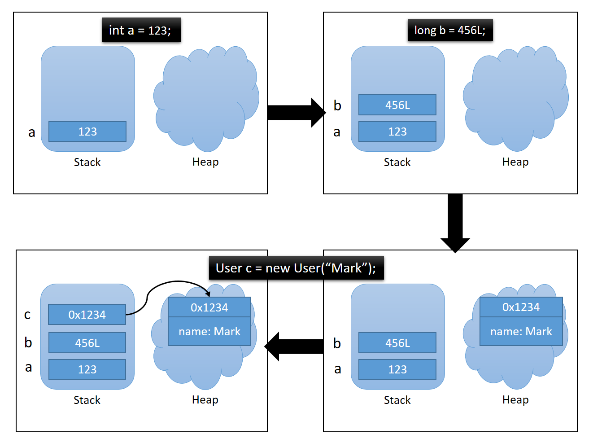

JVM - Stack & Heap
JVM - Stack & Heap
問題意識
String str1 = "aaa";
String str2 = "aaa";
String str3 = new String("aaa");
System.out.println(str1 == str2); // true
System.out.println(str1 == str3); // false
Stack(棧) & Heap (堆)
圖片來源：https://blog.marklee.tw/java-interview-jvm-stack-heap/ 
- Stack：
(1) 儲存基本型別( int 、 short 、 long 、 byte 、 float 、 double 、 boolean 、 char) 的值，以及儲存參考位置(Reference Type) 的位址。 (沒有 String)
(2) 在宣告時，就分配內存。且超過作用域就會釋放。
- Heap：
(1) 儲存 Class Type (String、Integer、自己的物件) 變數值與物件位址。通常為透過 new 方式建立。
(2) 在宣告時，尚不會分配資源，等到 new 時，才會分配內存。並且在沒有引用指向他們時會釋放。
String Pool (字串池)
1.採用字面值創建String：
字串池實際上是堆(Heap)中的一部分，而不是獨立的記憶體區域。字串池的存在是為了優化字串的存儲和共享，以提高效能和節省記憶體。
當你使用字面值創建字串物件時，Java會先檢查字串池中是否已經存在相同內容的字串。如果存在，則直接返回字串池中的實例，而不會在堆中創建新的物件。
如果字串池中不存在相同內容的字串，則會 在字串池中創建一個新的實例，並在堆中創建相應的物件。
結論來說，如果用字面值創建String，回傳的是同一物件的參考位址。
2.採用 new 建立String
在Java中，當你使用 new 關鍵字創建一個字串對象時，都會在堆中創建一個新的字串對象。
JVM會首先在字串池（String Pool）中查找是否已經存在相同內容的字串。如果字串池中已經存在相同內容的字串，則不會在字串池中再次創建該字串，而是 直接在堆（Heap）中創建一個新的字串對象，並將該字串對象的引用返回給你。
如果字串池中不存在相同內容的字串，則會先在字串池中創建一個字串對象，然後再在堆中創建一個新的字串對象，並將該字串對象的引用返回給你。
PS：儘管在使用
new關鍵字創建字串對象時，字串池的檢查似乎是多餘的，但這是Java語言的設計選擇，以確保字串對象的一致性和效能。
解決問題：
String str1 = "aaa"; // 在字串池中創建字串對象
String str2 = "aaa"; // 使用字串池中的字串對象
String str3 = new String("aaa"); // 在堆中創建一個新的字串對象
System.out.println(str1 == str2); // true，兩個引用指向字串池中的同一個字串對象
System.out.println(str1 == str3); // false，兩個引用指向不同的字串對象
補充：
- a == b：比對兩物件的參考位址是否相等。
- a.equals(b)：比對兩物件的值是否相等。